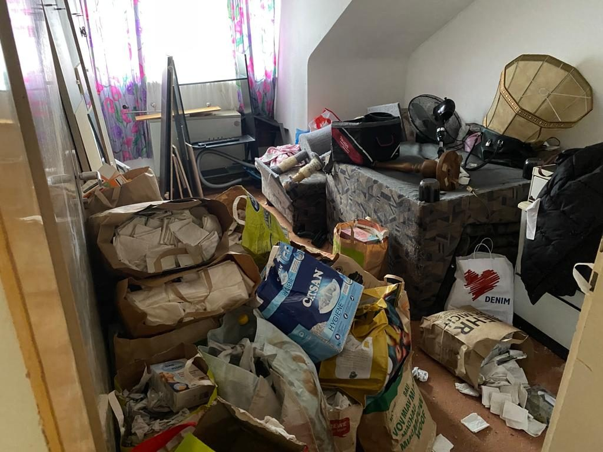

Ratgeber Auszug
Wohnung besenrein übergeben: Was beim Auszug in Hamburg raus muss
Der Umzug steht, aber die alte Wohnung ist noch voll? Hier lesen Sie, was „besenrein“ laut Bundesgerichtshof wirklich bedeutet, was Sie vor der Schlüsselübergabe ausräumen und zurückbauen müssen und wie Sie Ärger mit dem Vermieter vermeiden.
Kurz gesagt: so geben Sie die Wohnung richtig zurück
- Rückgabe ist Pflicht: Endet der Mietvertrag, muss der Mieter die Wohnung zurückgeben (§ 546 BGB). Gemeint ist eine geräumte Wohnung, nicht nur der Schlüssel.
- Alles Eigene muss raus: Möbel, Hausrat und Müll, auch aus dem Kellerabteil, vom Dachboden und vom Balkon.
- Besenrein heißt grob sauber: Grobe Verschmutzungen müssen weg. Eine Grundreinigung mit Fensterputzen verlangt der Begriff nicht.
- Eigene Einbauten: Einbauschrank, Hochbett oder selbst eingebaute Küche dürfen Sie mitnehmen. Verlangt der Vermieter es, müssen Sie sie zurückbauen.
- Pünktlich sein: Wer die Wohnung zu spät zurückgibt, zahlt für die Zeit danach weiter Entschädigung.
Was bedeutet „besenrein“ genau?
Viele Mietverträge verlangen, dass die Wohnung „besenrein“ übergeben wird. Der Bundesgerichtshof hat dazu am 28. Juni 2006 entschieden (Az. VIII ZR 124/05): Die Pflicht beschränkt sich darauf, grobe Verschmutzungen zu beseitigen. Das Gericht stützt sich auf den Duden, nach dem besenrein „mit dem Besen grob gereinigt“ bedeutet.
Im entschiedenen Fall hatte der Vermieter unter anderem verlangt, die Fenster von Nikotin zu befreien und Küche und Keller gründlich zu reinigen. Das musste der Mieter nicht. Eine Pflichtverletzung sah das Berufungsgericht nur bei Spinnweben im Kellerraum.
Für die Praxis heißt das: Fegen oder saugen Sie alle Räume, nehmen Sie Spinnweben ab und lassen Sie keinen Müll, keine Kartons und keine Reste in Schränken, Keller oder Dachboden zurück. Ob Sie darüber hinaus streichen oder renovieren müssen, ist eine eigene Frage. Das hängt davon ab, ob Ihr Mietvertrag Schönheitsreparaturen wirksam auf Sie übertragen hat.
Was muss vor der Übergabe alles raus?
Zurückgegeben wird die Wohnung mit allen Nebenräumen, die zum Mietvertrag gehören. Gehen Sie deshalb nicht nur durch die Zimmer, sondern auch durch diese Stellen:
- Kellerabteil und Dachbodenverschlag: Hier sammelt sich über Jahre am meisten an, und hier wird es am Ende oft knapp.
- Balkon, Terrasse, Abstellraum: Blumenkästen, Erde, alte Gartenmöbel und Planen gehören dazu.
- Fahrradkeller und Gemeinschaftsflächen: Eigene Fahrräder, Regale oder Kisten, die dort stehen, nehmen Sie ebenfalls mit.
- Schränke und Küche: Auch Vorräte, Putzmittel und Reste in Einbauschränken müssen weg.
- Dübel und Lampen: Eigene Lampen abnehmen und die Anschlüsse sicher verschließen lassen.
Was Sie weder mitnehmen noch verkaufen können, muss entsorgt werden. Planen Sie dafür genug Zeit vor dem Übergabetermin ein, denn Abholtermine und Recyclinghöfe sind gerade zum Monatsende gefragt.
Eigene Einbauten: mitnehmen, zurückbauen oder dalassen
Hat der Mieter die Wohnung mit eigenen Einrichtungen versehen, darf er sie wegnehmen (§ 539 Abs. 2 BGB). Das gilt zum Beispiel für eine selbst gekaufte Einbauküche, einen Einbauschrank oder ein Hochbett. Der Berliner Mieterverein weist darauf hin: Auf Verlangen des Vermieters sind Sie zum Rückbau verpflichtet. Wer das unterlässt, kann schadensersatzpflichtig werden.
Möchte der Vermieter die Einbauten behalten, kann er die Wegnahme abwenden, muss Ihnen dann aber eine angemessene Entschädigung zahlen (§ 552 Abs. 1 BGB). Klären Sie deshalb früh und schriftlich, was bleiben darf und was raus muss. Typische Fälle beim Rückbau:
- selbst verlegter Laminat- oder Teppichboden
- eingezogene Trennwände aus Gipskarton
- Einbauküche, Regalsysteme, Hochbetten
- Verkleidungen an Wänden oder Decken
Liegen unter einem alten Bodenbelag noch ältere Platten oder schwarzer Kleber, lassen Sie vorher klären, ob Asbest darin sein kann. Mehr dazu im Ratgeber Asbest vor Abriss und Umbau. Anschlüsse für Herd oder Wasser trennt ein eingetragener Fachbetrieb.
Termin, Schlüssel und Übergabeprotokoll
- Rechtzeitig fertig werden: Die Schlüssel müssen laut Berliner Mieterverein spätestens am Morgen des ersten Tages nach dem Ende der Mietzeit beim Vermieter sein. Ist die Wohnung dann noch nicht zurückgegeben, kann der Vermieter für diese Zeit die vereinbarte oder die ortsübliche Miete als Entschädigung verlangen (§ 546a BGB).
- Vorher selbst begehen: Gehen Sie am Tag vor der Übergabe mit zwei Zeugen durch die leere Wohnung, machen Sie Fotos und schreiben Sie die Zählerstände auf.
- Protokoll prüfen: Unterschreiben Sie beim gemeinsamen Termin nichts, womit Sie nicht einverstanden sind. Mängel, die Sie bestreiten, lassen Sie als strittig vermerken.
- Fristen kennen: Ansprüche des Vermieters wegen Veränderungen oder Verschlechterungen der Wohnung verjähren in sechs Monaten, sobald er sie zurückerhalten hat (§ 548 BGB).
Hausrat in Hamburg loswerden, ohne abgezockt zu werden
Für einzelne Möbel und Geräte ist die Stadtreinigung Hamburg zuständig. Sie holt Sperrmüll gegen Gebühr ab, kleinere Mengen bringen Sie selbst zum Recyclinghof. Was wohin gehört und was die Abholung kostet, steht auf unserer Seite Entrümpelung Hamburg. Schutt aus dem Rückbau gehört nicht in den Sperrmüll, siehe Bauschutt entsorgen.
Die Verbraucherzentrale Hamburg warnt vor Firmen, die wie die Stadtreinigung auftreten, am Telefon einen günstigen Preis pro Kubikmeter nennen und vor Ort deutlich mehr verlangen, etwa mit einem Aufschlag für angeblichen Sondermüll. Ihre Tipps:
- Die Stadtreinigung Hamburg verlangt grundsätzlich kein Bargeld vor Ort.
- Prüfen Sie das Impressum, bevor Sie einen Auftrag geben.
- Zusätzliche Kosten, die vorher nicht vereinbart waren, müssen Sie nicht einfach bezahlen.
- Bei Verträgen am Telefon oder per Mail haben Sie in der Regel ein Widerrufsrecht.
Wir räumen Ihre Wohnung vor der Übergabe
T&A Abriss, Rückbau & Entrümpelung leert Wohnungen, Keller und Dachböden in Hamburg und im Umland, damit Sie entspannt zum Übergabetermin gehen.
- Kostenlose Besichtigung: vor Ort oder per Videoanruf, werktags ab 16:30 Uhr und samstags ab 9 Uhr.
- Festpreis: Anfahrt, Tragen, Abtransport und Entsorgung sind enthalten. Es gibt keine Überraschung am Tag der Räumung.
- Räumen und Rückbau: Wir tragen alles heraus, trennen nach Sorten und bauen auf Wunsch Laminat, Trennwände oder die alte Küche aus, siehe Innenabbruch.
- Besenrein zurück: Zum Schluss fegen wir durch, die Wohnung ist bereit für den Termin mit dem Vermieter.
Richtpreise nach Größe: Kellerabteil bis 8 m² ab 150 €, Wohnung mit 2 Zimmern ab 800 €, Wohnung mit 3 Zimmern ab 1.200 €. Den verbindlichen Festpreis bekommen Sie nach der Besichtigung.
Quellen
- Berliner Mieterverein: BGH, Urteil vom 28.06.2006, VIII ZR 124/05 – besenreine Rückgabe heißt Beseitigung grober Verschmutzungenberliner-mieterverein.de
- Berliner Mieterverein: Infoblatt 180 – Probleme beim Auszug aus der Mietwohnung (Rückgabe, Rückbau von Einbauten, Schlüssel, Protokoll)berliner-mieterverein.de
- Gesetze im Internet: § 546 BGB – Rückgabepflicht des Mietersgesetze-im-internet.de
- Gesetze im Internet: § 546a BGB – Entschädigung des Vermieters bei verspäteter Rückgabegesetze-im-internet.de
- Gesetze im Internet: § 539 BGB – Ersatz sonstiger Aufwendungen und Wegnahmerecht des Mietersgesetze-im-internet.de
- Gesetze im Internet: § 552 BGB – Abwendung des Wegnahmerechts des Mietersgesetze-im-internet.de
- Gesetze im Internet: § 548 BGB – Verjährung der Ersatzansprüche (sechs Monate)gesetze-im-internet.de
- Verbraucherzentrale Hamburg: Sperrmüll raus, Abzocke rein (Stand 25.06.2024)vzhh.de
Diese Übersicht ersetzt keine Rechtsberatung. Im Zweifel fragen Sie bei der zuständigen Stelle nach, etwa beim Bezirksamt oder bei der Stadtreinigung.
Häufige Fragen
Fragen und Antworten
Was bedeutet besenrein bei der Wohnungsübergabe?
Laut Bundesgerichtshof (Urteil vom 28. Juni 2006, VIII ZR 124/05) müssen nur grobe Verschmutzungen beseitigt werden. Die Wohnung ist leer, gefegt und frei von Müll und Spinnweben. Fenster putzen oder eine Grundreinigung gehören nicht dazu.
Muss ich auch den Keller ausräumen?
Ja. Zurückgegeben wird die Wohnung mit allen Nebenräumen aus dem Mietvertrag, also auch Kellerabteil und Dachbodenverschlag. Was dort zurückbleibt, gilt als nicht geräumt.
Muss ich mein selbst verlegtes Laminat wieder herausnehmen?
Wenn der Vermieter es verlangt, ja. Sie dürfen eigene Einbauten mitnehmen und müssen sie auf Verlangen zurückbauen. Will der Vermieter sie behalten, schuldet er Ihnen eine angemessene Entschädigung (§ 552 BGB). Klären Sie das am besten schriftlich vor dem Auszug.
Was passiert, wenn die Wohnung am letzten Tag nicht leer ist?
Dann ist sie nicht zurückgegeben. Der Vermieter kann für jeden weiteren Tag eine Entschädigung in Höhe der vereinbarten oder ortsüblichen Miete verlangen (§ 546a BGB). Planen Sie die Räumung deshalb einige Tage vor dem Termin ein.
Wie schnell können Sie eine Wohnung vor dem Auszug räumen?
Das hängt von der Menge und unserem Kalender ab. Melden Sie sich am besten, sobald der Auszugstermin feststeht. Nach der kostenlosen Besichtigung nennen wir Ihnen Festpreis und Termin.
Kontakt
Besichtigung anfragen
Kostenlos und unverbindlich, vor Ort oder per Video. Wir melden uns innerhalb eines Werktags.
Eine Anfrage für alles: Kreuzen Sie einfach alle Arbeiten an.